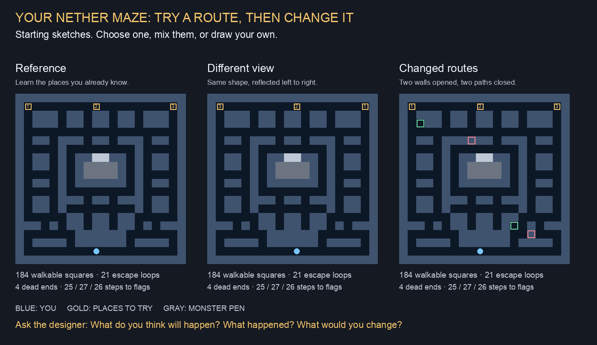

Try a route.
Make the maze yours.
Pick a sketch, predict an escape, then play and change one thing. You can keep an idea, mix it with another, or invent your own.
Your maze. Your monsters. Your rules.
Collect three relics and escape home through your own Nether 1. Try corner tricksters, wrong-way wanderers or sharp trackers, then make your own mix.
Play the Nether 1 game labFollow the finger, dodge help, practice or three lives, and settings you can compare side by side. Choose what belongs in your game.
Nether 1: fool the monsters
Play your Nether 1 layout with the same speed and number of monsters. Compare the current clever ones with monsters that notice turns later or sometimes choose a wrong turn.
Try the monster comparisonKeep the faces you liked. Choose the behavior that makes escaping fun.
My Nether Maze Workshop
Try the reference, a different view, changed routes, or your own editable maze. Name your idea and tell us what you noticed.
Follow the finger + dodge enabled. Explore without monsters first; try a short chase when you want.
Open the maze workshopAsk together: “Where do you think you could escape?”
Controls & swarm test
The original test compares follow-the-finger, tap-to-path, virtual stick and swipe-to-turn. Stress mode adds monsters up to 520.
The link starts on follow-the-finger at chase .80x. Tap dodge to enable it before playing. Save stress measurements with copy before turning stress off.
Open controls & stressUseful monster numbers will be chosen after the actual Nether maze is designed.

Open on another phone or tablet
Scan this code with the device camera, or copy the link below. No account or installation is needed to open the tests.